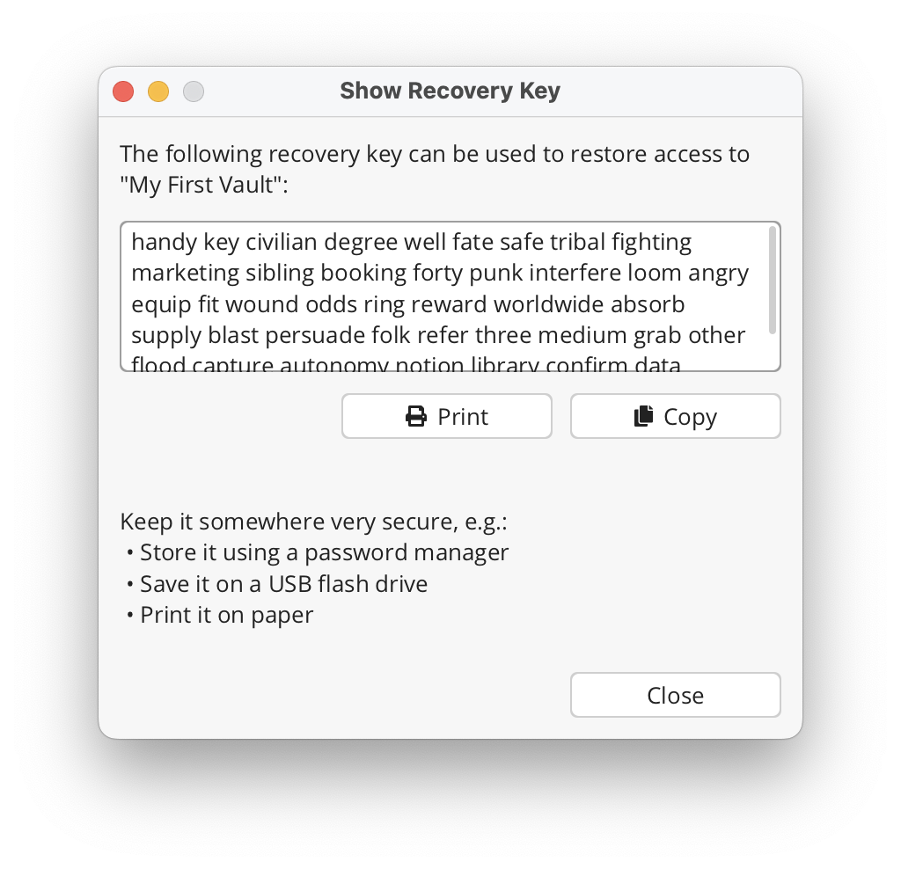

Cryptomator 用了半年踩过的七个坑，第三个差点让我丢了所有文件
Cryptomator 界面看着极简，真正用起来却藏着不少反直觉的细节。我从删除保险库到 Recovery Key 验证踩了一圈，整理出七个真实翻车场景和对应解法。
cryptomator官网 这东西，第一次打开你会觉得"哇，这也太简单了吧"——建保险库、输密码、拖文件进去，完事。我当初也是这么想的，结果半年下来踩了七个坑，其中第三个差点让我把整个保险库当成"已经删干净了"就不管了。写这篇就是把我踩过的坑摊开说，希望你看到的时候别再像我一样懵。
坑一：以为"Remove"就是删了，结果两年的保险库还躺在云盘里
症状：某天整理 Cryptomator 界面，右键一个不用的保险库点了 Remove，转头就把那个目录的事忘干净了。直到几个月后云盘空间预警，清空间时才发现那堆密文文件还占着 30 多 GB。
原因：Cryptomator 的 Remove 字面意思就是"从列表移除"——它真的只做这一件事。界面上的入口消失了，密文目录完全没动，云盘同步还在继续跑，Recovery Key 也安然无恙。官方文档里写得明明白白，但谁会去看 Remove 的 tooltip 啊？
解法：如果只是暂时不用，Remove 没问题，哪天想回来用加号重新 Open Existing Vault 就行。但要彻底删的话，Remove 只是第一步。真正的物理删除得手动用系统文件管理器删密文目录，然后等云盘同步完成，最后务必去云盘网页版清版本历史——这才是最容易漏的环节。
坑二：云盘版本历史里还留着我的 masterkey
症状：保险库目录删完、云盘同步完，正想着终于干净了，结果看文档才知道——很多云盘的版本历史会保留被删除文件的旧版本。我删了 masterkey.cryptomator，但 Google Drive 的版本历史里还躺着三个月前的那一份。
原因：加密学上 masterkey 丢了也就丢了，但云盘的版本历史功能是站在"文件恢复"角度设计的，不会管你这个文件是不是加密密钥。攻击者如果拿到你的云盘访问权，从版本历史里恢复旧的 masterkey，再配上你手里的 Recovery Key——整个保险库就开门了。
解法：删完密文目录之后，一定要到云盘网页版找版本历史的入口。Google Drive 是文件右键 → Manage versions → Delete permanently，Dropbox 和 OneDrive 各有各的位置。不确定有没有版本历史的，安全起见都清一遍。这个步骤我之前完全没意识到它的存在，直到翻cryptomator文档排查才发现这是安全建议里反复提的一条。

坑三：在解锁状态下手贱删了密文目录
症状：清理空间的时候手快，在资源管理器里把保险库密文目录整个拖进了回收站——而那一刻 Cryptomator 还在解锁状态，虚拟盘正挂在那里。结果就是 Cryptomator 直接崩溃，解锁视图里的文件系统瞬间乱掉，有几个文件还没来得及加密写入就中断了。
原因：Cryptomator 解锁时会在内存里维护一个文件系统视图，所有读写操作都实时加密/解密。如果你绕过 Cryptomator 直接在磁盘层删密文目录，内存里的状态和磁盘状态瞬间脱节，轻的崩溃重启，重的就是文件损坏。
解法：任何时候动保险库密文目录，先 Lock。这是铁则。界面上点一下 Lock 不费一秒钟，能省掉后面几个小时的文件恢复。我那次运气好，回收站里找回来之后再解锁没问题，但如果云盘同步刚好在中间插手，后果不敢想。
坑四：Android 版选了 F-Droid，结果发现没有 Google Drive
症状：手机上想从 Google Drive 访问保险库，装了 F-Droid 版之后才发现——F-Droid 版的云盘列表里没有 Google Drive 这个选项。折腾了半天才搞清楚为什么。
原因：F-Droid 仓库的原则是纯开源、无 Google 依赖。Google Drive 原生 API 需要 Google Play 服务，这个组件不是开源的，所以 F-Droid 版故意砍掉了 Google Drive 原生集成。同样被砍的还有 pCloud 的部分支持。如果你用 S3 兼容存储，反而只有从cryptomator下载拿的 APK 版有。
解法：选 Android 版本的时候先看自己有什么云盘。有 Google Play 服务就装 Google Play Freemium 版，云盘支持最全、更新最快。坚持 F-Droid 生态的话，Google Drive 得靠 WebDAV 或 S3 协议间接访问——前提是你的 Google Drive 账号开通了这些协议。五个变体的区别文档里有完整表格，我之前没细看就瞎装了。
坑五：空闲自动锁定怎么等都不锁
症状：开了"空闲 5 分钟自动锁定"，结果出门半小时回来保险库还在解锁状态。反复调时间，设成 2 分钟也不生效。
原因：Cryptomator 的空闲计时器是按"文件系统活动"来算的——不是没人碰 Cryptomator 窗口就叫空闲。后台的杀毒软件实时扫描、云盘同步程序做定时检查、甚至 Windows Defender 的定期扫描，都会触发文件系统活动，把空闲计时器重置归零。我装的云盘客户端每隔十分钟就会扫一遍同步目录，难怪自动锁从来没生效过。
解法：要么关掉自动锁，要么把杀毒和云盘同步程序对保险库目录做白名单排除。便携设备上我现在改成手动 Lock 配合 Windows Hello 存密码——解锁时刷个脸就行，比赌自动锁靠谱。
坑六：启动自动解锁 + Reveal Drive 放在了公司电脑上
症状：公司发的笔记本，觉得每次开机都输密码麻烦，就勾了"启动自动解锁"和"解锁后自动打开文件管理器"。有天开会时同事凑过来看我屏幕，刚好 Cryptomator 在后台自己启动了，我的隐私文件直接在文件管理器里摊开。
原因：这个组合确实最省事——开机 → 开 Cryptomator → 自动解锁 → 自动打开，全程不用动手。但它的安全边界完全取决于"这台电脑只有你能用"。公司电脑有 IT 远程协助、有锁屏密码被重置的风险、有忘在会议室的可能。我当初就是嫌输密码麻烦，没多想就勾上了。
解法：只用在只有自己用的台式机上。笔记本尤其是带出门的，老老实实手动解锁。如果实在想省点事，配合系统钥匙串存密码，至少不用每次输完整密码，但解锁那一下还是手动来。
坑七：Decrypt File Name 告诉我文件名，却不告诉我它在哪
症状：云盘版本历史里看到一串密文文件名，想知道哪个是我要恢复的旧版本。用 Decrypt File Name 跑了一下，表格给出来的明文文件名是对的——但我还是不知道这个文件在保险库目录树的第几层。
原因：这是加密设计决定的。文件名加密是确定性的（同样的明文名 → 同样的密文名），但目录结构不加密。Decrypt 工具只负责密文文件名到明文文件名的映射，不扫描整个目录树去找它的位置。文档里说可以先用 Locate Encrypted File（明文 → 密文）定位密文，再去云盘恢复，反过来再用 Decrypt 验证——这俩工具得搭配用。
解法：需要双向查找的时候，Locate 和 Decrypt 配合着来。先在解锁视图里用 Locate 定位密文，去云盘恢复版本之后再用 Decrypt 确认恢复的确实是目标文件。单独用 Decrypt 只能解决一半问题。
防坑清单
总结一下，七个坑浓缩成五条速查：
- Remove ≠ 删除，彻底删保险库要手动删目录 + 等云盘同步 + 清云盘版本历史
- 任何时候动密文目录，先 Lock 保险库，解锁状态下别动磁盘层
- Android 版别瞎选渠道，Google Play Freemium 版云盘支持最全，F-Droid 砍了 Google Drive
- 自动锁不生效先查后台程序重置空闲计时器，杀毒和云盘同步是重灾区
- 自动解锁 + Reveal Drive 只放私人台式机，笔记本老老实实手动来
知道这些坑之后，Cryptomator 其实相当省心。加密强度够、跨平台互通、保险库格式稳定，只要别在那几个反直觉的点上踩雷，长期用下来没出过真正的安全事故。Cryptomator 是开源项目，我整理的一些实战笔记在 GitHub、Gitee 和 GitCode 三个仓库都有，国内访问用后两个更稳。